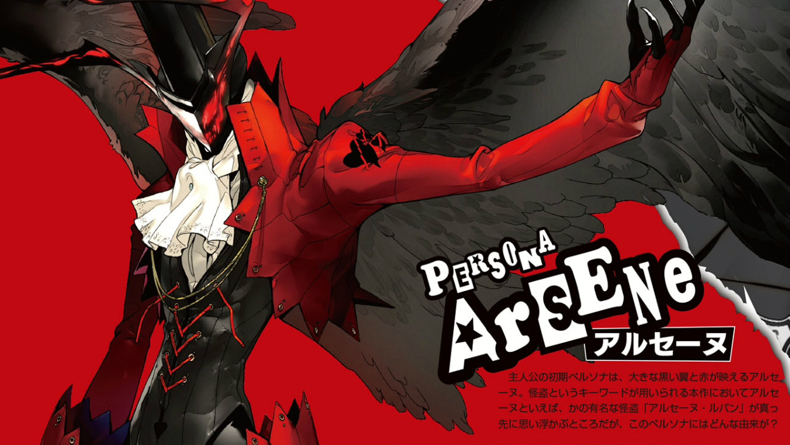

Persona 5
To All RPG fans: The Next Game in the Main Series is Coming!
What's Persona?
Persona is an RPG series set in cities and high schools in modern day Japan. It focuses on the growth of adolescents who, upon the awakening of their "Persona" abilities, overcome various trials together.
The heart of the Persona series is the clashing of ordinary events such as school life, friendship, and love, with the extraordinary such as urban legends, strange rumors, bizarre occurrences, and glimpses of the dark side of society. Its mysterious charm has fascinated fans all over the world.
The series has expanded to various media, including anime, music concerts, stage plays, and manga. Its popularity continues to soar by the day.
Throughout the series, "Persona" refers to a hidden "personality" or the "other self" that lurks within oneself. Personas manifest themselves as legendary gods and demons, and hold otherworldly powers. The adolescents who awaken to the Persona ability wield their powers to confront and overcome many perils that stand in their way.
Our Leading Man is a Phantom Thief
Beneath the veneer of typical urban high school life,
a group of teenagers mask their mysterious alter egos,
their "phantom thief" side. Who are they?
Why are they dressed as such? What are their motives?
And... why are they being pursued?
A picaresque coming-of-age story, Persona 5
will bring a thrilling, new twist to the RPG genre!
The Protagonist is a High-School Student!
You will assume the role of a second-year high school student who becomes a Persona-user through an unexpected incident. Having moved to Tokyo just before the start of the school year, he finds residence at a cafe run by his parents' friend, and is about to get his first taste of school life in the big city.
The protagonist seems quiet and well-mannered at first glance, but gives a completely different impression once he has donned his "phantom thief" guise.
What is the motivation of his alter ego...?
Persona Arsene
Arsene is the protagonist's initial Persona, characterized by a mask-like face and a pair of huge, black wings. Some suspect an association between its name and the famous gentleman-thief, Arsene Lupin. What is the origin of this Persona, and what power does it hold?
Set in Modern Day Tokyo!
This is an account of the wild adventures experienced by a team of young misfits, who grow dramatically along the way. While attending Shujin High School, the protagonist will encounter a number of individuals, each with his or her own distinctive personality and charm. School life in the city is full of surprises and interesting events! It will most definitely be a fun year for the protagonist, living as an ordinary student.
However, he and his friends become involved in an incident which leads to the awakening of their Personas. No one would ever suspect that these adolescents will eventually shake the world...
Welcome to the next iteration of the Persona series, boasting a brand new metropolitan setting, all-new cast, and fresh, original story.